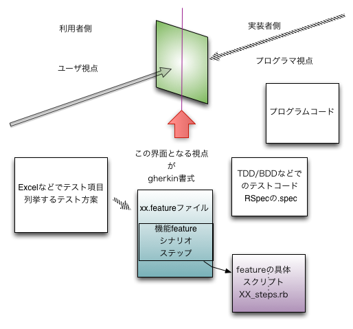

エンドツーエンドテストの自動化は Cucumber から Turnip へ
- はじめに
- テストについてのおさらい
- エンドツーエンドテストツールとしての Cucumber
- Cucumber から Turnip へ
- Turnip まわりで使われるテスト自動化の為のツール
- Turnip 入門
- Turnip のテスト実装
- リモートアクセス
- ステップ実装 Tips
- 補足
- おわりに
- 著者について
書いた人: 福井 修 (ir3)
はじめに
皆さん、テストしていますか？ Cucumber は使っていますか？ RSpec は？ テストなんか書いてない派ですか？ Test::Unit 派ですか？ あるいは minitest ばりばりですか？
もちろんテストなしのリリースは有り得ませんので、何らかの方法でテストを実施されていることでしょう。
TDD/BDD といった、テストを仕様・ふるまい記述手段として利用する「テストファースト」で開発を進める方式が浸透してきていますが、全てがその方式で開発される訳ではありません。
この記事では、「テストファースト」にこだわらず、「テストラスト」でもエンドツーエンドテスト自動化 (内部詳細構造に立ち入らず、外部インターフェースにて挙動を確認する) を進める際に有利に使える便利なツール「Turnip」を紹介します。
テストについてのおさらい
Turnip の解説に入る前に、「テストとは何か」ということを簡単におさらいしておきたいと思います。
テストの種類
Ruby の世界で『テスト』というとユニットテストの自動化の話が中心になりがちですが、それは広大なテストの世界の一部でしかありません。たとえば、システム構築の世界でよく言われる「単体テスト」「結合テスト」「総合テスト」という考え方があります。
テスト屋さんの世界では、次のように分類し各種テストや評価を実施する整理もあります。
- 機能テスト
- 境界値テスト
- レアケーステスト
- セキュリティ検証
- 性能評価
- 可用性評価
- データ保全性評価
そこにはあまり立ち入らないでざっと大きく分けると、「内部テスト」と「外部テスト」ということになります。
内部テストと外部テスト
テストを内部テストと外部テストという観点で整理してみます。内部テストは実装者だけの世界、外部テストは実装者以外でもできる世界です。
内部テスト
内部テストはいわゆる「ホワイトボックステスト」で、プログラマが意図したとおりにプログラムが動作することを確認するテストのことです。具体的には、プログラマが変数の値を変えながらコードを直接実行して、期待する結果が得られるかどうかを検証していくことになります。
たとえばゲームプログラミングであれば、「キャラクターの経験値が特定の値になったらレベルアップする」ということを確かめるために、実際にプログラム内部のキャラクターの経験値を直接書き換えてみて、本当にレベルアップするかどうかを確かめてみるようなことが内部テストとなります。
外部テスト
外部テストはいわゆる「ブラックボックステスト」で、プログラムのコードに立ち入ることなくプログラムの外部インターフェース (画面 etc.) を介して評価していきます。
またゲームプログラミングを例にすると、先ほど同様「キャラクターの経験値が特定の値になったらレベルアップする」ということを確かめるために、実際にゲームをプレイしてみて経験値をためて、条件を満たしたらきちんとレベルアップすることを確かめてみるようなことが外部テストとなります。
テストファーストとテストラスト
さらにテストは、テストファーストとテストラストという観点でも整理できます。
テストファースト

テストを最初に書いて、そのテストを満たすようにコードを実装する開発手法をテストファーストと言います。テストを「作りながらの仕様記述方法」として利用するわけで、TDD (Test Driven Development: テスト駆動開発) や BDD (Behavior Driven Development: 振舞駆動開発) とも呼ばれます。テストファーストの利点は、Kent Beck の著書『テスト駆動開発入門』や本誌るびまの連載「スはスペックのス」などを参照ください。
テストファーストでのテストは、テストを記述してから実際に検証するまでを短いサイクルで回す単体テストや結合テスト段階で用いられるのが自然です。総合テスト (エンドツーエンドテスト) をテストファーストで行うことも可能ですが、テストを記述してから実際に検証するまでのサイクルがどうしても長くなりますので、「仕様を明確にすること」と「仕様を実現すること」の因果関係が遠くなってしまい、あまり向いていません。

近年注目を集めている開発手法である「継続的インテグレーション」では「自動テスト」を実施しますが、これには「仕様が満たされていることをテストするためのテストコード」が存在していることが前提になります。テストファーストを実施していると、その前提を自然と満たすことができます。
テストラスト
出来上がったシステムがきちんと動作することを確認する、というのがテストの基本です。従って出来上がったあとの評価の為のテスト、すなわちテストラスト (という言葉があるわけではありませんが、テストファーストの対義語として便宜的にこう呼びます) という本来のテスト方法も脈々と流れています。
テストラストで実施するテストは、テスト項目を Microsoft Excel などのスプレッドシート (表計算ソフト) で記述することが多いようです3。仕様書からテストすべき項目を洗い出し、スプレッドシートに列挙します。またテスト実施後にはテスト結果をスプレッドシートに追記し、保存し管理します。
テスト項目を Excel で列挙し、テストを実施し、テスト結果の管理を行うという方式は、脈々と行われています。特に開発者がテストするのではない第三者テストでは、それが主流でしょう。それはそれで磨き抜かれた方法ではあります。テストコードが無くても人間がテスト項目に基づいて動作チェックするので、いろいろな観点でテストができます。しかし労力 (すなわちコスト) と時間がかかるのが宿命です。
テストラストでは、単体テスト、結合テスト、総合テストのすべての段階をカバーできますが、単体テストを網羅して記述するのには冗長でかつ膨大になるので向いていません。逆に出荷テストや受け入れテストはテストラストで行われるのが普通ですので、「テストファーストだけ」または「テストラストだけ」ですべてのテストを網羅するのではなく、適材適所で使い分けるのが良いでしょう。
テストツールの進化・変遷
テストの本質は変わらなくても、ツールは次々と変遷してゆきます。ここでは、Ruby や Rails で使われるテストツールの進化・変遷を見ていきます。
Ruby には Ruby 1.8 まで xUnit の流れを汲む Test::Unit が標準添付されていましたので、RSpec4 登場以前は Test::Unit を使うのが当然で、その方式は今でも脈々と流れているところはあります (Ruby 1.9 からは minitest が標準添付)。
RSpec が登場して、ベタベタなコードでなくふるまいを記述してテストするというスタイルが DSL5 の流行とともに普及しています。
さらに後述する Cucumber が登場し、feature ファイルによるもう一段メタな記述 (feature: 機能) から順番に具体化 (シナリオ、ステップ) する方式 (Gherkin 書式) で、feature 記述部分はコードに依存せず、プログラマ以外のステークホルダ (関係者) によっても仕様記述や評価が可能となる世界が開けました。
Cucumber は、実装者だけの「内部テスト」「テストファースト」の枠から、実装者以外の「外部テスト」「テストラスト」へ枠の拡がりの突破口を開きました。
Web 周りテストツールの変遷
Ruby の Web 周りでのテストツールの変遷を見てみましょう。現在 (2013.5) は、「4. Rails3」時代の円熟期で Rails4 も間近です6。
- CGI 時代
- RubyUnit, Test::Unit
- Rails1 時代
- Test::Unit
- Rails2 時代
- RSpec, Cucumber + Webrat
- Rails3 時代
- RSpec(should), Cucumber + Capybara
- RSpec(expect to) + Turnip + Capybara ← 今ここ (移行期)
- Rails4 時代
- minitest + Turnip 改 + Capybara さてどうなりますか?7
昔はテストは xUnit で assert するものであったところ、RSpec 時代 になって should が定着したと思ったら、expect to でないと時代遅れ8となってしまうという、何とも進化の早い世界であることが分かると思います。
テストツールもベタからメタへ
ソフトウェアで注目されるトピックは時代とともに変わり、OSからミドルウェアへ、そしてアプリケーションへと移ってきました。
テストツールもそれに合わせて「ベタベタのプログラムコードそのままの記述」から「DSL を利用した振る舞いの記述」へ進化しています。その流れを言葉で表現してみると、「ベタからメタへ」となります。
『テストツールもベタからメタへ』
ベタ ←――――――――――――――→ メタ
Test::Unit → RSpec → Gherkin (Cucumber/Turnip)第一世代：Test::Unit
テストの記述は Ruby プログラムそのもので、通常 test_xxx.rb (xxx はテスト対象を表す文字列) というファイルにテストを記述します9。
第二世代： RSpec
テストの記述は RSpec の DSL (Ruby プログラムでありながら、自然言語 (英語) としても読める) で、通常 xxx_spec.rb (xxx はテスト対象を表す文字列) というファイルにテストを記述します。
RSpec は Test::Unit でやっていることを DSL で別の書き方にしたもので、その「書き方」によってテストの記述がわかりやすくなりました。以下に例として高井さんの「RSpecによるユニットテストの書き方」 を引用させていただきます。
describe 'テスト対象' do
context '状態' do
describe 'テスト対象メソッド' do
context '与える入力' do
it '期待する出力'
end
end
end
end第三世代： Gherkin (Cucumber/Turnip)
テストの記述は Cucumber により拡張された Gherkin 書式 (Cucumber の特徴である、システムの振る舞いを記述するための自然言語に近い書式のこと。Business Readable DSLとも呼ばれます) で、ベタなテストコードにメタな説明 (機能・シナリオ・ステップ) の層 (レイヤ) を付加し、プログラムの実装者でなく第三者や受け入れ者が記述し理解できる (日本語でも記述できる) 道が開かれました。
Gherkin 書式は、テスト記述を機能とシナリオそしてステップを次の 2 段階のファイルに分割して記述します。
- 仕様記述の feature ファイル
- Cucumber で受け入れテストの対象となるアプリケーションの機能 (フィーチャ) を記述するファイル
- テストの記述は非実装者や日本語でもわかりやすい表現で記述できる
- 通常 xxx.feature (xxx はテスト対象を表す文字列) というファイル名にする
- xxx.feature を具体的に実行する step_definitions ファイル
- Cucumber でテストシナリオの手順 (ステップ) の定義を記述するファイル
- プログラマの実装の世界の記述をする
- 慣例として xxx_steps.rb (xxx はテスト対象を表す文字列) というファイル名にする
諸橋さんの著書「はじめる！ Cucumber」から feature ファイルのサンプルを内容を一部改変して引用すると、次の記述となります。
#language: ja
フィーチャ: ログインしてユーザを識別できる
ユーザとして、
ログイン機能などで自分の情報を識別したい。
なぜなら、メッセージなどを「自分のもの」として区別したいからだ。
シナリオ: ユーザ登録してログインする
前提"新規ユーザ登録"ページを表示している
もし"ログイン名"に"moro"と入力する
かつ"E メール"に"xxxxxxxxx@xxx.xxx"と入力する
かつ"作成"ボタンをクリックする
ならば"こんにちは moro さん"と表示されていることテストの記述に自然な日本語が使えるというのは、実にうれしいところです。
実装者側と利用者側の接点
ここまでの内容のまとめとして、実装者側の視点での TDD/BDD と利用側の視点でのシステムテスト (エンドツーエンドテスト) を図 1. でもう少しわかり易く図解してみましょう。 
図 1. 実装者側と利用者側の接点
エンドツーエンドテストツールとしての Cucumber
継続的インテグレーションツールの普及とエンドツーエンドテストの需要の高まり
先ほども述べましたが、近年では「継続的インテグレーション」による迅速で効率的な開発に関心が高まり、テストの自動化を実現する継続的インテグレーションのためのツールも普及してきています。
TDD/BDD を実践している場合は、作りためたテストを整理してまとめて動かせばボトムアップテストとなりますので、継続的インテグレーションツールによるテスト自動化は自然の流れです。
しかし、TDD/BDD でテストを作り溜めていない場合はどうやってテスト自動化に取り組めばよいのでしょうか？ そこで登場するのが Cucumber です。Cucumber を使うことで、ボトムアップで行う単体テスト・結合テスト段階を越えて、トップダウンで行う総合テストを自動化することができます。Web 周りの開発であれば、Selenium-RC や Capybara といった Web ブラウザ上のユーザー操作を自動化するツールを Cucumber のステップ内で使うことにより、これまで自動化が難しく手動での目視確認となっていたエンドツーエンドテストを自動化することができます。エンドツーエンドテストの自動化が完成すれば、リグレッションテストの迅速化・省力化に寄与できます。これは開発コストの相当な割合を占めるテストを合理化する有利な手段となります。
まとめると、継続的インテグレーションツールでの自動テストのニーズは、単体テスト・結合テスト段階から総合テストへと範囲が拡がってきています。その流れを言葉で表現してみると、やはり「ベタからメタへ」となります。
『自動テストのニーズもベタからメタへ』
ベタ ←――――――――――――――→ メタ
Unit Test → Integration Test → General Testエンドツーエンドテストツールとしての Cucumber のメリット
先ほども説明しましたが、Cucumber ではフィーチャ (機能) ・シナリオ・ステップの 3 段階で振る舞いをテストでき、コードの世界とは別次元の「テスト記述の世界」が展開できるというのが画期的でした。また「テストを日本語で記述できる」という点で、第三者にもわかりやすいというのも大きなメリットです。
TDD/BDD は、ボトムアップで断片から全体が構成されるというスタイルです。Cucumber もその方式を踏襲できるのはもちろんですが、フィーチャ (機能) ありきで出発することもできるので、トップダウンでの機能テスト構成の記述が可能となったのです。
このボトムアップかトップダウンかという違いは実はシステム全体のテスト・評価という観点から見るとかなりの違いであり、トップダウンでの機能テストが記述できるというのはテスト自動化への大きな進歩です。
なぜ Cucumber がそれほど普及していないのか
「日本語でテストを記述できる」という特長は、実装者以外にもわかりやすく、また実装フェーズとは独立してテストを記述できるので、テストのやり方の大きな流れとして普及することが期待されましたが、実際には Cucumber はあまり普及していないようです。著者が考える Cucumber の普及が遅い理由を 4 点挙げてみます。
- 具体的な要素ツールの進化が激しく、バージョンが異なるとすぐに動作しなくなる。
- 機能・シナリオ・手順 (ステップ) を記述する .feature ファイルは良いとして、実際のプログラムレベルを記述するステップファイルの実装にはそれなりのスキルが要求され、スケジュールが確保されていないと負荷が高い。
- 正規表現を扱う箇所が敷居を高くしている。
- RSpec でテストしてさらに Cucumber でもテストをするとなると 2 重にテストすることになり、結構な手間がかかる。
まとめると「Cucumber よさげだけど、結構面倒じゃ orz」というのが実態なのではないでしょうか。
Cucumber から Turnip へ
さて、やっと本題に入ります。
Turnip とは
Turnip は、受け入れテストのフレームワークである Cucumber によって整備されてきた feature ファイルと step_definitions ファイルの構成 (Gherkin 書式) を RSpec 内でテスト実行することができる新鋭のライブラリで、Cucumber の改善案として提案されました。Cucumberの後継としてWeb システムでのエンドツーエンドのテストを自動化する際に利用できます。
Cucumber の問題点を改善して実装されている筋の良さで、今後の普及が期待されています。
Turnip の作者
Turnip の作者は、Capybara 開発者 の Jonas Nicklas さんです。当然 Capybara との相性もばっちりです。Turnip は「Mapping steps to regexps is hard」という問題意識で開発されたライブラリです。
Cucumber から Turnip で改善された点
Cucumber から Turnip で改善された点を次にまとめます。
- Cucumber では正規表現を用いるためにステップ記述が煩雑になりがちであった点を、Turnip では正規表現を使わずにプレースホルダーを使用するため、ステップ記述がスッキリしました。この「正規表現を使わないことで一段階複雑さが軽減された」点は、結構大きな効果があります。
- 「Cucumber のステップファイル記述と差異は、feature を解釈するステップファイルの記述に正規表現を使っていない点です。プレースホルダー (:keys, :link_name, ..) を使って、テストに使うパラメーターを取り出しています」10
- 従来は RSpec と Cucumber の 2 本立てとなっていたテストを RSpec に一本化できるので、テストの管理や操作の面倒さが解消されます。
Turnip まわりで使われるテスト自動化の為のツール
テスト自動化のツールとして、Turnip のまわりに次のライブラリ群があります。
メインツール
RSpec
RSpec はテストを記述するためのドメイン特化言語 (DSL: Domain Specific Language) を提供するフレームワークです。
Gherkin
Gherkin は「Business Readable DSL」と称されるところの機能とシナリオとステップを定義してゆく feature ファイルの記述方式 (Gherkin 書式) の操作ライブラリです。 Cucumber で開拓され、gherkin の gem として括り出されているので、Turnip でも共通で利用できます。ここは大きなポイントです。
Capybara
Capybara はブラウザの UI の自動テストをする際に、テキスト入力やボタンクリックや表示結果を確認するなどに便利な API (語彙) を提供するヘルパーライブラリです。
capybara-webkit
capybara-webkit は、Capybara の JavaScript ドライバのひとつです。
selenium
selenium は ブラウザ/JavaScript ドライバの老舗です。
CI ツール
Jenkins
Jenkins は、Java で実装された CI (Continuous Integration: 継続的インテグレーション) 支援ツールです。
周辺ツール
Spork
Spork は druby を使って Rails 環境をプレロードする高速化ツールです。
Spring
Spring もプレロードする高速化ツールです。
Turnip 入門
Turnip 本家
基本的な情報源は jnicklas さんの github です。
RSpec 準備
RSpec 環境がまだ未構築であれば RSpec の設定ファイルを生成する準備をします。
Gemfile で gem ‘rspec-rails’ を指定します。
group :development, :test do
gem 'rspec-rails'
endRSpec 環境を生成します。(次の例の “rails g” は “rails generate” の alias です)
$ bundle install
:
$ rails g rspec:install
create .rspec
create spec
create spec/spec_helper.rbTurnip インストール
Gemfile に呼び出しを追加して bundle 実行します。 Capybara も capybara-webkit を指定すると一緒にインストールされます。 Capybara の現在 (2013.5.25) 時点最新版は Capybara 2.1 で capybara-webkit 1.0.0 で対応となりました。
Capybara 2.1 にしてエラーが出る場合 Capybara は 2.0.3 バージョン指定して利用します。
RSpec 環境に加えて Gemfile に turnip と JavaScript ドライバの capybara-webkit の利用宣言を追加し bundle install します。
group :development, :test do
gem 'rspec-rails'
gem 'capybara', '2.0.3'
gem 'capybara-webkit'
gem 'turnip'
end$ bundle installTurnip テストコンテンツ配置場所
spec ディレクトリ配下に features (.feature ファイル群置場) と steps (steps.rb ファイル群置場) ディレクトリを配置するのがよいでしょう。自由です。
~/spec/features # .feature ファイル群置場
~/spec/steps # steps.rb ファイル群置場steps ファイルの配置場所の指定
Turnip のステップファイルの配置場所を spec_helper.rb に記述し、また Turnip ライブラリなどの呼び出しも指定します。これで RSpec にめでたく組み込まれることになります。
Dir.glob("spec/**/*steps.rb") { |f| load f, true }
require 'capybara/dsl'
require 'capybara/rspec'
require 'capybara/webkit'
require 'capybara/poltergeist'
require 'rspec/rails'
require 'rspec/autorun'
require 'turnip'
require 'turnip/capybara'Turnip 実行
feature ファイルを引数にして rspec を実行します。
$ rspec -r turnip/rspec spec/features/hogehoge.featurehogehoge.feature に記述されたステップに呼応して該当するステップ名が定義されているところの xxx_steps.rb が呼び出されて実行されます。
Turnip のテスト実装
Turnip でテストを実行するには、次の feature ファイルと step定義ファイルの 2 種類のファイルを記述します。
feature ファイルの作成
feature ファイルは、機能 (フィーチャ) を記述するファイルです。拡張子は .feature です。 テストする内容を、機能 (とストーリー)、シナリオ、ステップの 3 階層で記述します。日本語で書けるのが重要なポイントです。 この Gherkin 書式は、Cucumber と共通です。
機能 (feature)
アプリケーションの特長となる機能 (群)。個々の機能だけではなく、特性や使い勝手など、ユーザにとって何らかの価値を提供できる単位で書きます。
ストーリー (story)
機能 (feature) の補足説明を記述します。要するにコメントなので、無くても OK です。
シナリオ (scenario)
機能 (feature) を検証するためのテストシナリオ。要約した見出し。詳細は次のステップにて記述します。
ステップ (step)
テストシナリオでの操作や検証などの具体的な手続きをステップで記述します。テスト実行時に、ステップで記述した内容に 1 対 1 で step_definitions ファイルにあるステップ定義スクリプトが実行されます。
feature ファイルサンプル
Gherkin 書式の feature ファイルサンプル (hoge.feature) です。 キーワードに日本語を使うには # language: ja を指定します。
# encoding: utf-8
# language: ja
機能: ポータル画面からログイン
シナリオ: トップページにアクセスしてログインする
前提 hoge サイトにアクセスする
もしトップページを表示する
ならば 画面にようこそと表示されていること
かつ id と password を入力する
かつ サインインボタンをクリックする
ならば 画面にユーザ名 testuser が表示されることこの日本語による「機能」「シナリオ」「ステップ」の feature ファイルの記述に対応して 次に steps.rb ファイルでスクリプトでの操作を記述します。
step 定義ファイルの作成
step 定義ファイルは feature ファイルのステップに記述した文言についてステップ毎に具体的な動作を Ruby スクリプトで記述します。ファイル名は xxx_steps.rb です。
このステップ定義 (step_definitions) が実装されていないと rspec spec/features/hogehoge.feature で実行した際に黄色の未定義メッセージが出力されます。この step 定義ファイルの実装には、Ruby の実装力が求められます。
ステップ記述サンプル
Turnip ステップ記述サンプル hoge_steps.rb
# encoding: utf-8
step 'hoge サイトにアクセスする' do
Capybara.app_host = "http://www.hoge.jp/"
end
step 'トップページを表示する' do
visit '/'
end
step '画面にようこそと表示されていること' do
# page.should have_content('ようこそ') # should はもう古い
expect(page).to have_content('ようこそ')
end
step 'id と password を入力する' do
fill_in 'session_login', :with => 'testuser'
fill_in 'session_password', :with => 'password'
end
step 'サインインボタンをクリックする'
click_button 'サインイン'
end
step "画面にユーザ名 :user が表示されること" do |user|
expect(page).to have_content(user)
endWeb 操作には、Capybara が使用されます。その習得にはそれなりに初期コストが必要です。
Capybara の Web 操作は Capybara Node Action11 に解説があります。よく使うのは fill_in や click_link、click_button です。
リモートアクセス
最近の Capybara では Capybara 本体でリモートアクセスをサポートしているので、capybara-mechanize を呼ばなくても
Capybara.app_host = "http://google.jp/"などのように app_host にリモートの url を指定することでリモート Web にアクセスできます。
ステップ実装 Tips
div の class で絞り込む方法
within で要素を絞り込みます。div の class で絞り込む例です。
within :xpath, "//div[@class='hoge fuga']" do
click_link '削除'
endただし絞り込みの結果、要素が複数存在すると
Capybara::Ambiguous:
Ambiguous match, found 3 elements matching xpath "//div[@class='hoge fuga']"とエラーになってしまいます。よくある話です。
ここで先頭要素であれば first メソッドが使えます。
within first(:xpath, "//div[@class='hoge fuga']") do
click_link '削除'
endこれで Ambiguous: と怒られることなく先頭要素に絞り込めます。
同一文言が複数存在する場合に XPath を使って特定する方法
複数ユーザの複数行の中から指定するユーザの行の「削除」をリンクする例です。
within :xpath, "//tr[td='#{user}']" do
click_link '削除'
endXPath 自体は XML などでのグラフ構造内を汎用的に走査する仕様なので、なかなか奥深いです。 […] の述語を使うのがポイントです。1213
JavaScript の confirm box の文言チェック
capybara-webkit を使用すると JavaScript の動作に追随できます。
# In Ruby:
page.driver.alert_messages
=> ["Hi"]
page.driver.confirm_messages
messages
=> ["Number?"]しかしながら、この返り値は配列であるため 通常のチェック文がそのままでは使えません。おなじみの古い書き方を、次のように新しい書き方に変えます。
# 古い書き方
page.should have_content('hoge')
# 新しい書き方
expect(page).to have_content 'hoge'この page は、Capybara オブジェクトです。この構文の page の箇所に配列や文字列をもってきても should などのメソッドを持っていないのでエラーとなります。
従って配列を配列として、配列要素をチェックする構文で対応します14。
page.driver.confirm_messages.should =~ ['hoge']ブラウザドライバ/JavaScript ドライバの切換え
ブラウザドライバ/JavaScript ドライバは各種あります。必要に応じて使い分けます。
| No. | 名称 | 備考 |
| 1 | rack_test | capybara で default のドライバ。 |
| 2 | selenium | ブラウザを呼び出して操作できますが JavaScript の操作が弱い。遅い。 |
| 3 | webkit | headless なので速い。JavaScript もそこそこ操作でき、capybara ではメジャー。 |
| 4 | poltergeist | headless (だから名付けの所以) なので速い。Phantom.js を抱えるので機能豊富。絶賛盛り上がり中。 |
xxx_steps.rb の中で、利用指定して切換えられます。
# Capybara.javascript_driver = :selenium
# Capybara.javascript_driver = :webkit
# Capybara.javascript_driver = :poltergeist
# Capybara.current_driver = :poltergeist
Capybara.current_driver = :webkit
# Capybara.current_driver = :selenium
# Capybara.current_driver = :rack_test補足
Capybara 情報
- @netwillnet さんの Capybara README 意訳 より
Capybara の DSL は Webrat からインスパイアしています。多くのケースで後方互換性を保っている一方、重要な違いもいくつかあります。Webrat とは異なり、Capybara は 全ての検索で case sensitive です。これは、 Capybara は case insensivity をサポートしていない XPath をヘビーに使っているためです。
- @okitan さんの 「take a glance at capybara2.0」
- capybara 1.0 から capybara 2.0 へのバージョンアップでは互換性が失われた部分がありますが、そこが解説されています。
- @netwillnet さんの 「Capybara 2.0 アップグレードガイド」
- Capybara 2.0 Upgrade Guide - Funding Gates の意訳。有り難い。
step 予約語
step 予約語の一覧および日本語対応は、Cucumber の i18n 機能にて確認できます。
$ cucumber --i18n ja
| feature | "フィーチャ", "機能"|
| background | "背景"|
| scenario | "シナリオ"|
| scenario_outline | "シナリオアウトライン", "シナリオテンプレート", "テンプレ", "シナリオテンプレ" |
| examples | "例", "サンプル"|
| given | "* ", "前提"|
| when | "* ", "もし"|
| then | "* ", "ならば"|
| and | "* ", "かつ"|
| but | "* ", "しかし", "但し", "ただし"|
| given (code) | "前提"|
| when (code) | "もし"|
| then (code) | "ならば"|
| and (code) | "かつ"|
| but (code) | "しかし", "但し", "ただし"|ステップ予約語と英語表記と役割
| ステップ予約語 | 英語表記 | 役割 |
| 前提 | Given | データのセットアップなど、テストシナリオの前提条件を組み立てる |
| もし | When | リンクをクリックするなど、ユーザ操作に対応する |
| ならば | Then | データを検証する |
| かつ | And | すぐ上のステップと同じ役割をする |
コラム: 「前提」「もし」「ならば」の使い分け
「前提」「もし」「ならば」は等価なので、この使い分けに頑張らなくてもよい。 「はじめる！ Cucumber より」
これまでみてきたように、Cucumber の各ステップには、「前提」や「ならば」などといった予約語がついています。 これらは、機能的には同じものです。極端な話、すべてのステップを「前提」などで書いても、まったく問題なく動作します。とはいえ、読みやすさやステップのやっている種類を明示するために、適切に使い分けるのが一般的です。
Webkit の賞味期限
流れは速く Webkit も時代の主流から外れてゆきそうです。15
ということである時点で Capybara-webkit は衰退するかもしれません。phantom.js も QtWebkit ベースなので Blink 対応の新しい JavaScript ドライバに置き換わってゆくのでしょう。
おわりに
エンドツーエンドテストに利用しようとした Cucumber の面倒さにうんざりしていたところで Turnip に出会ってしまいました。正規表現を使わないだけでずいぶんスッキリしますし、RSpec と Cucumber の 2 本だてから 1 本化できるだけでも楽になりました。
テストラストでエンドツーエンドテストを自動化して迅速な CI を回すのは、時代のニーズになっていると思います。そのニーズに応えるために Turnip を採用して良かったので、記事を書いてみました。皆様の参考になれば幸いです。
feature ファイル作成や step_definitions ファイル作成時の定型部分の作成支援ツールやテストの計画・実績管理を Excel から WebDB に移すツールや、テスト周りの環境改善にはテーマが詰まっています。Ruby の魅力をどんどん活用してゆきたいところです。
著者について
福井修 (@iR3)
2001年まだマイナーだったRubyで英会話学校向け教材配信システムを構築16 して以来Ruby大好きしてます。関西OPENSOURCE+FREEWARE200217からRuby関西18を立ち上げたり 2006年はIVIAの監事したり2007年からは東京に移り2009年からiRubySystemsやってます。2012年RubyKaja19のひとりです。 —-
-
組み合わせテスト (Association Test) と呼ばれることもあります ↩
-
システムテスト (System Test) と呼ばれることもあります ↩
-
本誌記事「Axlsx でテスト支援」もご参照 ↩
-
Domain Specific Language の略。ドメイン固有言語。ある特定の問題に特化してデザインされたプログラミング言語のこと。RSpec はテストに特化した DSL となる。 ↩
-
「Rails4 で MiniTest + Spork + Guard - @tkeo」をご参考。 http://tkeo.hatenablog.com/entry/2013/01/17/143315 ↩
-
「MiniTest offers a simpler approach for testing Ruby code. And its the default in Rails 4. 」https://twitter.com/iR3/status/314542747103133696 ↩
-
https://twitter.com/iR3/status/271547557350621185 ↩
-
たとえば Ruby 本体に付属しているテストを参考にしてみて下さい。 https://github.com/ruby/ruby/tree/trunk/test ↩
-
「Solving Cucumber’s Problems ? Elabs」をご参照。 http://www.elabs.se/blog/30-solving-cucumber-s-problems ↩
-
http://rubydoc.info/github/jnicklas/capybara/master/Capybara/Node/Actions ↩
-
http://itref.fc2web.com/xml/xpath.html ↩
-
http://dyo.jp/blog/archives/401 ↩
-
http://d.hatena.ne.jp/mothprog/20090506/1241622080 ↩
-
https://twitter.com/iR3/status/323719859286462464 ↩
-
日経オープンシステム2002/2 p.122 ↩
-
http://k-of.jp/2002/event.html ↩
-
http://jp.rubyist.net/?RubyKansai ↩
-
http://kaja.rubyist.net/2012/kaja ↩